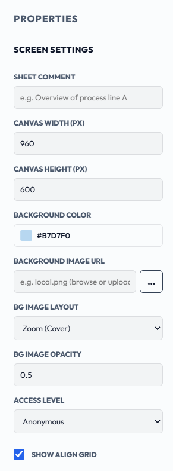
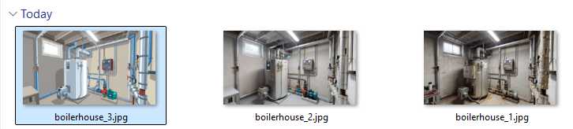
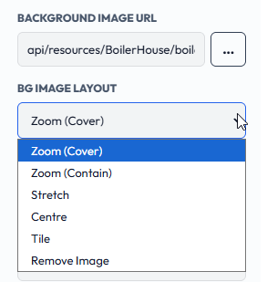
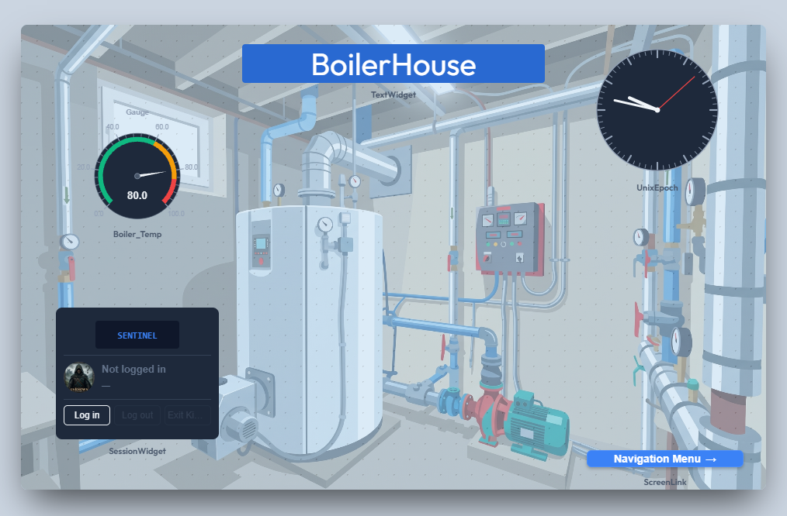
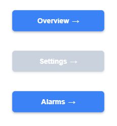

SentinelSCADA › Tutorial › Chapter 6
In the last chapter we looked at Project Properties, which apply to the whole project. Screen Properties are different: they apply to one screen only. They cover the screen's size, background colour and image, the access level required to open it, and the alignment grid.
Screen Properties appear in the Properties panel on the right of the designer, under SCREEN SETTINGS, whenever no widget is selected. Click an empty part of the canvas to bring them up.

Overview of process line A. It is documentation only and does not affect how the screen runs.1080, height 1920. New screens start at the sizes set on the UI & Screen Defaults tab of Project Properties, which we met in the last chapter.#B7D7F0.You can also place a picture behind the widgets, such as a P&ID diagram, a plant photo or a floor plan. Click the … button beside BACKGROUND IMAGE URL to open a file picker, and choose an image from your computer.

Supported formats are PNG, JPG (JPEG), GIF and WEBP. Any other type, including SVG and BMP, is refused with an Unsupported file type message.
The image is uploaded to the server and stored under the project's own resources folder, and the box fills in with its address, for example:
api/resources/BoilerHouse/boilerhouse_3_639293822358590258.jpg
BG IMAGE LAYOUT controls how the image fills the screen.

BG IMAGE OPACITY sets how solid the image is, from 0 (invisible) to 1 (fully opaque). The default is 0.5. Lower values keep the image from competing with the widgets.

ACCESS LEVEL is the minimum user role needed to open the screen: Anonymous, Guest, Operator, Engineer or Admin. Anonymous, the default, means no login is required.
In Run mode, a Screen Link widget that points to a screen the current user is not cleared for is greyed out and disabled, with no explanation shown. In Design mode the links always look normal, so they stay editable.
For example, with the Settings screen set to Engineer, Require Authentication ticked and the project in Run mode, a user logged in as Operator sees the link to Settings greyed out, while the links to Overview and Alarms work normally.

The Screen Swapper follows the same rule. With Require Authentication on, it skips any screen in its sequence that the current user is not cleared to open. See the Screen Swapper section in Chapter 5.
When SHOW ALIGN GRID is ticked, the alignment grid (the dots) is shown on this screen in Design mode, to help you line up and snap widgets. It overrides the project default for this screen only. The grid is a design-time aid and is not shown in Run or Kiosk mode.